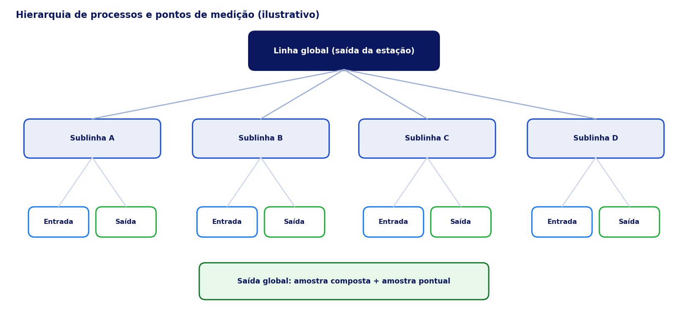
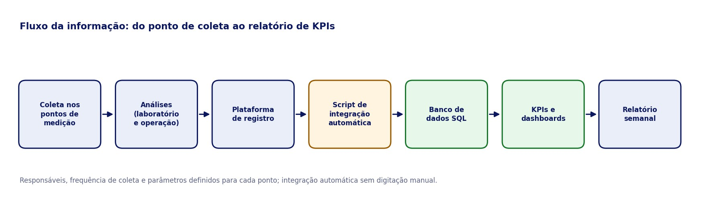
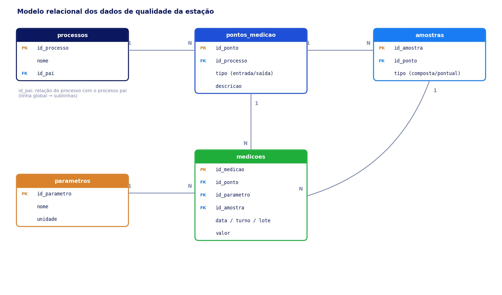
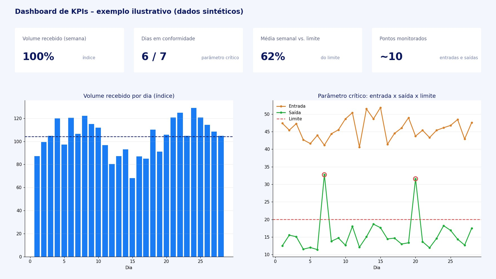

Problema / desafio do cliente
Uma central de tratamento de efluentes no estado de São Paulo precisava acompanhar de forma contínua a qualidade do seu descarte. Até então, os relatórios periódicos tratavam basicamente da quantidade de caminhões recebidos, e os resultados de qualidade ficavam dispersos, sem ligação clara com o ponto do processo onde foram medidos.
O objetivo era passar a emitir relatórios semanais de parâmetros críticos, como sólidos sedimentáveis, fenóis e pH, que permitissem verificar a conformidade com a norma de lançamento na rede de esgoto e agir rapidamente frente a desvios.
Contexto e características do processo
- A estação possui uma linha global, que representa o efluente final, e quatro sublinhas de tratamento, cada uma dedicada a um tipo de efluente e com entrada e saída próprias.
- Na saída global são coletados dois tipos de amostra: composta (várias coletas ao longo do dia) e pontual (uma coleta em um instante específico).
- As análises são feitas parte pelo laboratório e parte pela operação, com coletas nos horários de maior vazão ou a cada batelada.
- Os resultados levavam alguns dias para ficar disponíveis e eram registrados em uma plataforma separada.
Diagnóstico e dados analisados
O primeiro passo foi o mapeamento completo do processo e a definição de uma matriz de monitoramento:
- Cerca de 10 pontos de coleta, nas entradas e saídas de cada sublinha, na saída global e no retorno do filtrado do desaguamento de lodo.
- Parâmetros de qualidade por ponto: temperatura, pH, óleos e graxas (visual e analítico), sólidos sedimentáveis, sulfato e fenóis.
- Frequência de coleta e responsável (laboratório ou operação) definidos para cada ponto.

Metodologia utilizada
- Mapeamento do processo e das sublinhas de tratamento.
- Definição dos pontos de medição, parâmetros, frequência e responsáveis.
- Modelagem de um banco de dados relacional que liga cada medição ao processo, ao ponto, ao parâmetro, ao tipo de amostra e ao momento da coleta.
- Desenvolvimento de um script de integração automática que envia os dados da plataforma de registro para o banco de dados.
- Definição dos indicadores-chave de processo (KPIs) e do formato do relatório semanal.

Solução de engenharia desenvolvida
A informação foi organizada em cinco tabelas relacionadas:
- Processos: a hierarquia da planta. Cada sublinha aponta para o seu processo pai (a linha global), permitindo analisar cada sublinha separadamente e também o fluxo total.
- Pontos de medição: as entradas e saídas de cada processo, para identificar onde ocorre cada mudança nos parâmetros.
- Parâmetros: o que é medido, com nome e unidade, garantindo medições consistentes e comparáveis.
- Amostras: os tipos de amostra especiais (composta ou pontual) associados a cada ponto.
- Medições: os valores reais, ligados ao ponto, ao parâmetro, à amostra (quando aplicável) e à data, turno e lote.

Com essa estrutura, qualquer medição pode ser rastreada até a sua origem: qual processo, qual ponto e qual tipo de amostra gerou o dado.
Tecnologias e processos envolvidos
O banco de dados relacional (SQL) organiza os dados em tabelas ligadas por chaves primárias e estrangeiras, evitando duplicidade e garantindo consistência. Uma relação de auto-referência (processo pai) representa a hierarquia da planta.
Sobre essa base, ferramentas de business intelligence, como o Power BI, constroem dashboards hierárquicos, e um script de integração elimina a digitação manual dos resultados.
Modelagem, simulação e ferramentas computacionais
- Modelo entidade-relacionamento com cinco tabelas e relações 1:N.
- Consultas SQL para calcular os indicadores por sublinha e para a linha global.
- Script de integração automática entre a plataforma de registro e o banco de dados.
- Dashboards de KPIs de recebimento e de conformidade.
KPIs de recebimento: volume diário recebido, tempo de funcionamento versus parada, vazão de caminhões por hora, média semanal e distribuição semanal de caminhões por dia, para a linha global e para cada sublinha.
KPIs de conformidade: histogramas diários de cada parâmetro na saída global e em cada sublinha, comparando entrada e saída, com média semanal, desvio padrão e contador de dias em conformidade ou não com a norma de lançamento.

Resultados obtidos
- Pontos de medição, parâmetros, responsáveis e periodicidade definidos e documentados.
- Envio automático dos resultados da plataforma para o banco de dados, sem retrabalho manual.
- Relatórios semanais de KPIs para a linha global e para cada sublinha.
- Rastreabilidade completa de cada medição e estrutura escalável: novas sublinhas, parâmetros ou tipos de amostra entram sem mudar o modelo.
- Monitoramento contínuo e protocolos claros para agir frente a não conformidades.
CAPEX/OPEX e análise técnico-econômica
Quando aplicável: estimativas de CAPEX e OPEX, comparação entre alternativas, custo por m³ ou por tonelada, payback.
Escopo e responsabilidades da GETA
A GETA atuou na supervisão técnica e na engenharia de dados do projeto, sendo responsável por:
- mapeamento do processo e definição da matriz de monitoramento;
- modelagem do banco de dados relacional;
- desenvolvimento, junto com a equipe de meio ambiente do cliente, do script de integração automática;
- definição dos KPIs e do relatório semanal.
Principais entregáveis
- Relatório de controle e estratégias de decisão para a operação da estação.
- Mapa do processo com os pontos de coleta.
- Matriz de pontos, parâmetros, frequência de coleta e responsáveis.
- Modelo do banco de dados relacional (cinco tabelas e suas relações).
- Script de integração automática dos dados.
- Definição dos KPIs de recebimento e de conformidade e modelo de relatório semanal.
Galeria
Fotos ilustrativas de banco de imagens (Pexels) e esquemas simplificados, preservando a confidencialidade do cliente.